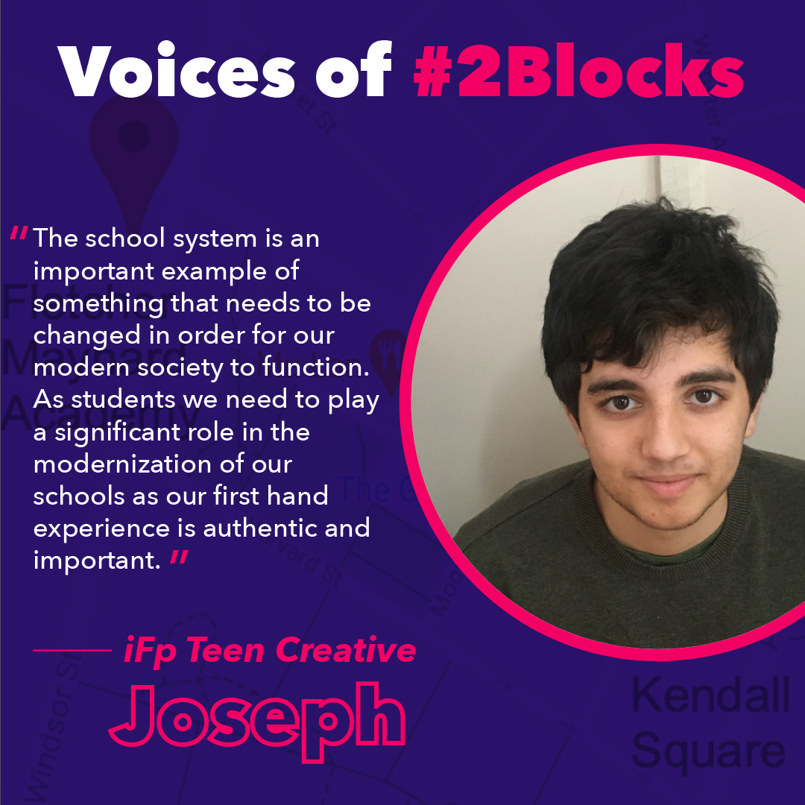

Our Potential
by iFp Teen Creatives
 Created by iFp Alum, Joseph, Story 1, entitled “Our Potential” tells the story of how 2 Blocks came to be. There is a disconnect between Kendall and the surrounding area, creating a tale of two Cambridges; but what if we can change the narrative? What if we can create a community that can flourish alongside Kendall, rather than live in its shadow? We can create a place that works for everyone.